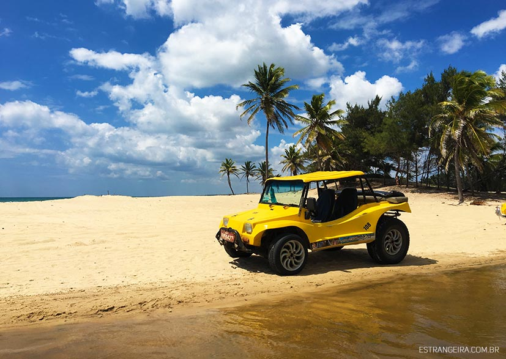
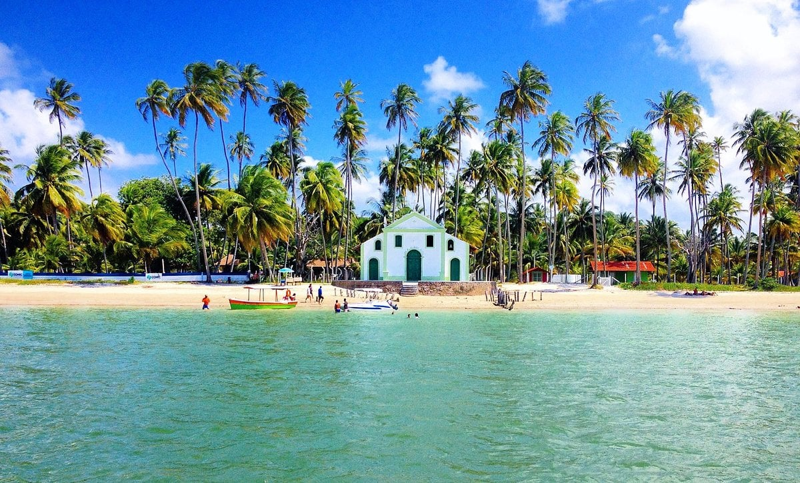
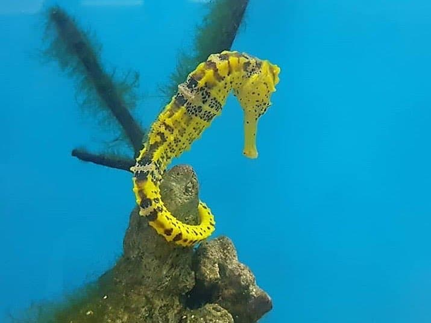
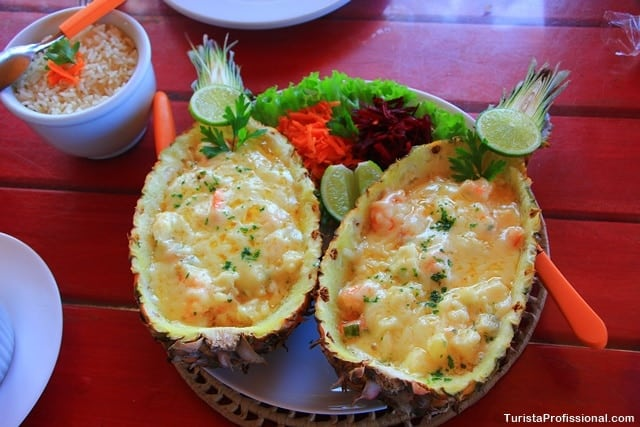

Descubra Porto de Galinhas com quem conhece cada detalhe!
Explore as lindas praias de Pernambuco
Sobre
História e Trajetória
João Lima nasceu e cresceu em Ipojuca, município que abriga Porto de Galinhas. Desde pequeno, acompanhava o pai, pescador, e aprendeu os segredos do mar e das piscinas naturais. Com o tempo, percebeu que queria compartilhar sua paixão pela região com visitantes do mundo inteiro.
Começou a trabalhar com turismo aos 18 anos, atuando como assistente em passeios de buggy e catamarã. Com o tempo, se especializou em ecoturismo, mergulho e roteiros personalizados, tornando-se guia credenciado. Hoje, com mais de 10 anos de experiência, oferece passeios exclusivos e diferenciados, garantindo aos visitantes uma vivência inesquecível.

Passeios Oferecidos
Os passeios são personalizados conforme o perfil do turista. Algumas opções incluem:Passeio de Jangada nas Piscinas Naturais
- Saída conforme a maré
- Snorkeling com peixes coloridos
- Fotografias subaquáticas opcionais

Tour de Buggy "Ponta a Ponta"
- Conhecendo as praias de Muro Alto, Maracaípe, Ponta de Maracaípe e Cupe
- Paradas estratégicas para fotos e banho de mar
- Opção de buggy exclusivo para casais

Passeio para Praia de Carneiros
- Transporte saindo de Porto de Galinhas
- Passeio de catamarã pelo Rio Arinquindá
- Visita a Igrejinha de São Benedito e ao banco de areia

Experiência Ecológica - Tataruga e Cavalo-Marinho
- Visita ao projeto Hippocampus (proteção de cavalos-marinhos)
- Observação de desova e soltura de tartarugas marinhas (quando disponível)
- Caminhada guiada na Praia do Pontal de Maracaípe

Pôr do sol no Pontal de Maracaipe
- Um dos cenários mais bonitos da região
- Passeio opcional de caiaque pelo manguezal
- Dicas de fotografia para registrar o momento perfeito
Roteiro Gastrônomico
- Degustação de pratos típicos como peixada pernambucana e bolo de rolo
- Visita a restaurantes e barracas locais para experiências autênticas
- Dicas de onde comer bem e barato

Diferenciais do Guia
- ✅Atendimento Personalizado - Passeios adaptados ao perfil do turista
- ✅Experiência e conhecimento local - Guia nativo e apaixonado pela região
- ✅Segurança - Credenciado pelo Ministério do Turismo
- ✅Fotos profissionais opcionais - Registro de momentos especiais
- ✅Flexibilidade de horários - Ajuste conforme necessidade do turista